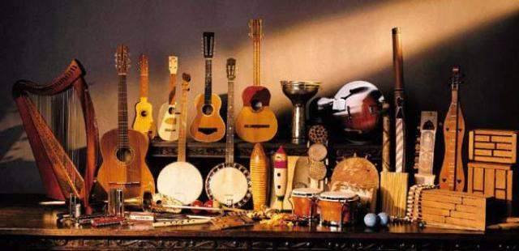
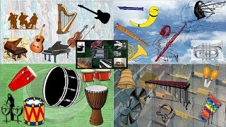
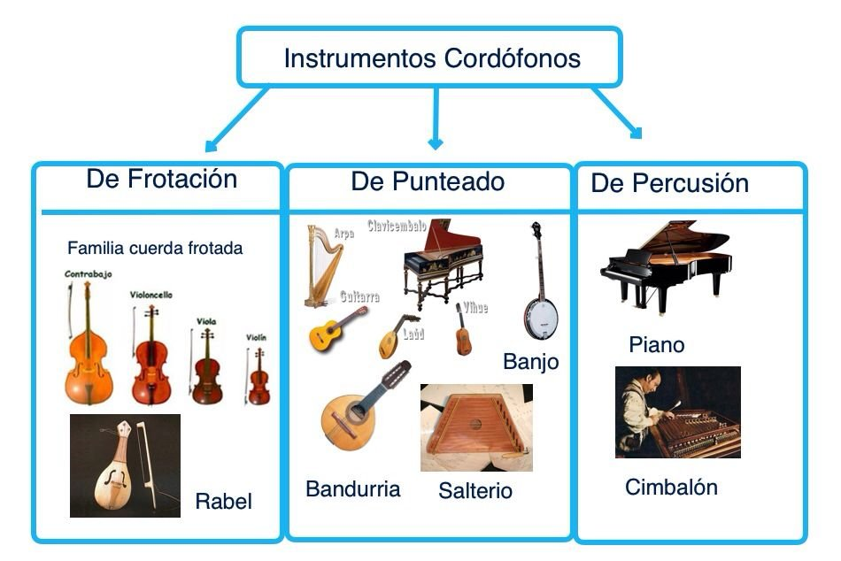
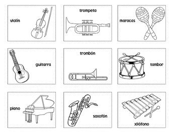
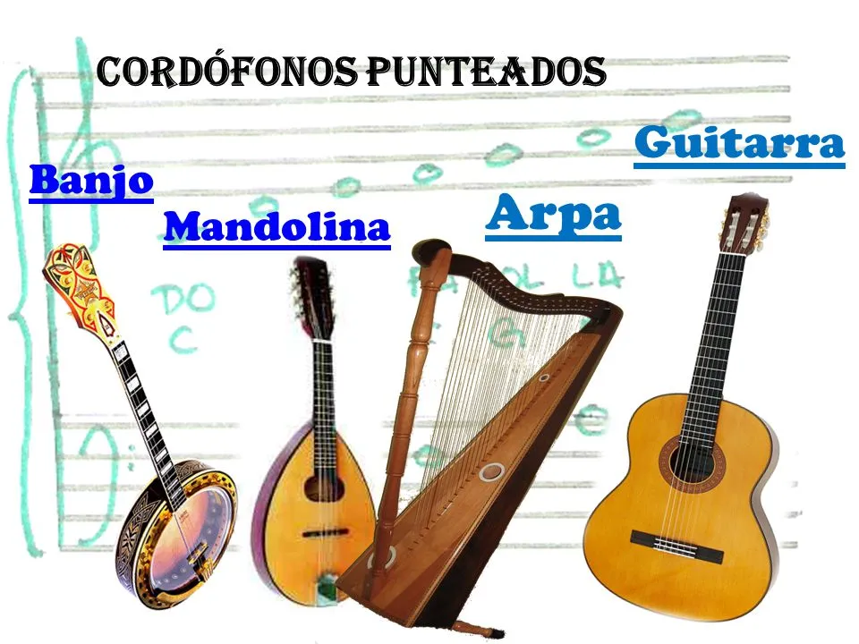
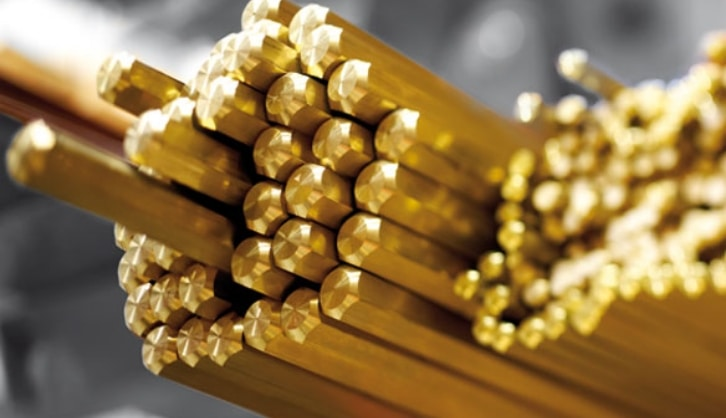
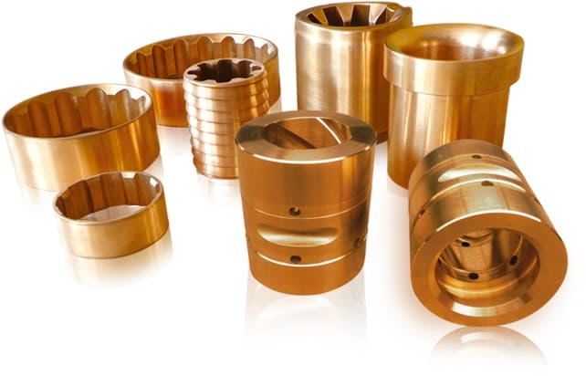
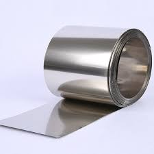

La organología es el estudio de los instrumentos musicales en lo referido a su historia, función social, diseño, construcción y forma de ejecución.

Introducción
La organología es la ciencia que estudia los instrumentos musicales y su clasificación. Comprende el estudio de la historia de los instrumentos, los instrumentos empleados en diferentes culturas, aspectos técnicos de la producción de sonido y clasificación musical. Existe una gran diferencia entre acústica, etnomusicología y musicología.
La lectura musical es la capacidad de interpretar la notación musical y traducirla en sonido. Es una habilidad esencial para cualquier músico, ya que les permite tocar música que no han escuchado antes y comunicarse con otros músicos.
Hay dos tipos principales de lectura musical: la lectura a primera vista y la lectura por ensayo. La lectura a primera vista es la capacidad de tocar una pieza de música sin haberla visto antes. La lectura por ensayo es la capacidad de tocar una pieza de música después de haberla practicado varias veces.
La lectura musical es una habilidad que se puede aprender con la práctica. Hay muchos recursos disponibles para ayudar a los músicos a aprender a leer música, incluyendo libros, sitios web y aplicaciones.

Clasificacion
La clasificación más usada de manera convencional es la de viento, cuerda y percusión. Viento: saxofón, flauta, clarinete, trompeta, oboe, etc. Cuerda: guitarra, arpa, violín, piano (el piano es de cuerda percutida), etc. Percusión: timbal, tambor, platillos, bombo etc.


Tipos
A continuacion se te mostraran unas imagenes en las cuales algunos instrumentos con su repectivo tipo o categoria
Frotacion

Punteado

Percusión

Materiales
Varios tipos diferentes de metales han sido usados para fabricar instrumentos musicales durante los últimos 10.000 años.
Eventualmente, ciertos metales probaron ser más apropiados para este propósito, ya sea debido a las propiedades sonoras del metal o su costo, casi cada tipo de instrumento musical moderno tiene algunas partes de metal.
Laton
El latón es una aleación de cobre y zinc y es ampliamente usado para hacer instrumentos musicales; toda una categoría de instrumentos musicales entra bajo el nombre "instrumentos de viento metal". Las trompetas, cornos franceses, trombones y tubas son los instrumentos principales que conforman la familia del viento metal. Otros instrumentos, como los saxofones (que debido a sus cañas son categorizados como instrumentos de viento madera), también están hechos de latón. El latón también es usado para crear algunos accesorios musicales como slides para guitarra.

Acero
Los instrumentos musicales hechos de acero tienen una historia necesariamente más corta que aquellos hechos de latón o bronce, ya que el acero no pudo ser fabricado en masa de forma económica hasta la introducción del proceso Bessemer en 1855. El acero es una aleación extremadamente fuerte hecha agregando una pequeña cantidad de carbono al hierro. El acero es usado principalmente para hacer instrumentos de percusión, notablemente el tambor de acero. Los tambores de acero modernos son creados usando el fondo de un barril de 55 galones (208,19 l), que luego es afinado a ciertos tonos manipulando la forma del acero. Además de tambores, las cuerdas de guitarras eléctricas y acústicas a menudo están hechas de acero. El acero inoxidable es usado para hacer partes de otros instrumentos al igual que accesorios..

Bronce
Los instrumentos musicales de bronce tienen una historia extremadamente larga, que se remonta a la antigua China. El bronce es una aleación de estaño y cobre que, cuando se forma correctamente, puede producir tonos como de campana. Los primeros instrumentos de bronce incluían campanas, címbalos y gongs; muchos instrumentos modernos de percusión todavía son hechos de bronce. El predecesor de la trompeta moderna también estaba hecho de bronce, pero el uso de bronce para crear instrumentos tipo corno dejó de ser popular cuando se introdujo el latón. Algunos tipos de cuerdas metálicas para guitarra también sob hechas de bronce..

Plata níquel
La plata níquel es una aleación de cobre, zinc y níquel que se ve como la plata y es muy duradera. En términos de composición, la plata níquel es similar al latón, pero debido a su apariencia plateada a veces es usada para crear instrumentos de viento metal color plateado. La plata níquel también es usada para chapar ciertas partes y accesorios musicales, dándoles un acabado plateado.
